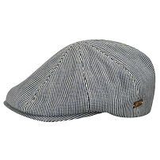
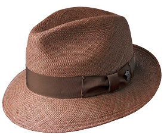
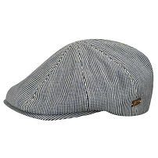
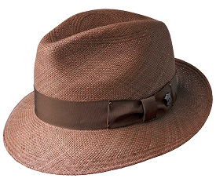

About Us
Heritage Hats was born to express my passion for learning and carrying on the skills and traditions of the traditional Southwestern culture. After moving to Phoenix from Rockford, Illinois, in 1981, I befriended two older gentlemen, Steve Speros and George Falkedes, who became my mentors and taught me the techniques and skills necessary to become a restoration expert. I am proud to have inherited their original cleaning and blocking equipment from 1912! While perfecting my methods, I started selling western hats from my pickup on the weekends and opened my first retail store in 1983. Today, Heritage Hats is the largest hat store in Arizona. It has various hats, including Western felt and straws, fedora felt and straws, panamas, and more. We know a hat is an expression of your unique personality and style.
Featured Awards:
Winner of Best of Phoenix
Winner of Stetson's Platinum Award
Hat Types
Hats are an icon of the Arizona desert and have been part of the tradition of the West since the early 20th Century. We have a large selection of westerns, fedoras, Panama's, Australians caps, and other hats. Hats also provide protection against skin cancer, so we carry brands that offer UPF of 50+ and a 5" brim for added protection. We also know that a hat expresses your unique personality and style. Check out these options to help you find the perfect hat! In addition to our hand crafted hats, we also offer a large selection of brand name hats including:


 





Restoration Services and Tips
At Heritage Hats, we know buying a hat is an investment, while showing your individual style and carries memories with it. Hats are often hand down through generations, so we know that taking good care of your hat is essential in the fabric of your hat and your life. We offer a range of hat cleaning/blocking and restoration services to restore your older hat or make style changes to a hat purchased here. We clean your hat according to your instructions and do most felt hats, including westerns, fedoras, and dress hats. Actor George Burns and local celebrities Wallace and Ladmo have entrusted us with their hat cleaning needs. The cleaning process includes completely dry cleaning your hat, re-blocking and shaping tit o the style you desire, and replacing your sweatband if necessary. We strive to complete all required services within three working days.

Cleaning and Blocking
$60

Reshape Crown
$25

Reshape Brim
$20

Sweatband Replacement
$45
This service is not offered for canvas or straws!
But you can find some tips to care for felt and strow hats here:

Felt Hats
- Use a gum eraser to remove deep stains. If sponging does not work, try sanding with 100-grit paper, moving it gently counterclockwise. Never press into the hat or the hat into the paper.
- Do not take your hat on and off by the crown. Instead, use the front and back of the brim next to the crown bend.
- Do not set your hat down on its brim; it will flatten and lose shape.
- Don't leave your hat anywhere, like an enclosed vehicle, where it gets very hot.
Straw Hats
- Wipe with a soft cloth dipped in warm suds made with a synthetic detergent or soap.
- Rinse with another cloth barely dampened with plain water and then allow to air dry.
- Do not get a straw hat too wet or you could damage it

"
What Our Customers Say
I recently took my grandfather's hat to Heritage to have it cleaned. My grandfather passed on nearly 25 years ago and he wore this tweed hat everyday in the winter in Chicago. The hat was very old and very dirty and I was nervous about having it cleaned. Heritage cleaned it up very well and it looks great. I plan to hang it on the wall in my office. I'm willing to bet this is one of the best hat cleaning shops in the country. Take your hats here for cleaning and shop around for something new too. You won't be disappointed."
~ BJ D. Phoenix, AZ
I visited Heritage Hats while in town prior to a holiday weekend and brought in two of my father's hats that needed to be cleaned and blocked. I requested them in time for me to head out after the holiday and Rich not only had them looking brand new, he delivered early (working over the holiday weekend) and provided a custom fit. Next time I need a hat, I am heading to Heritage Hats in Phoenix. Thank you Rich."
~ Dan DeGooyer
"